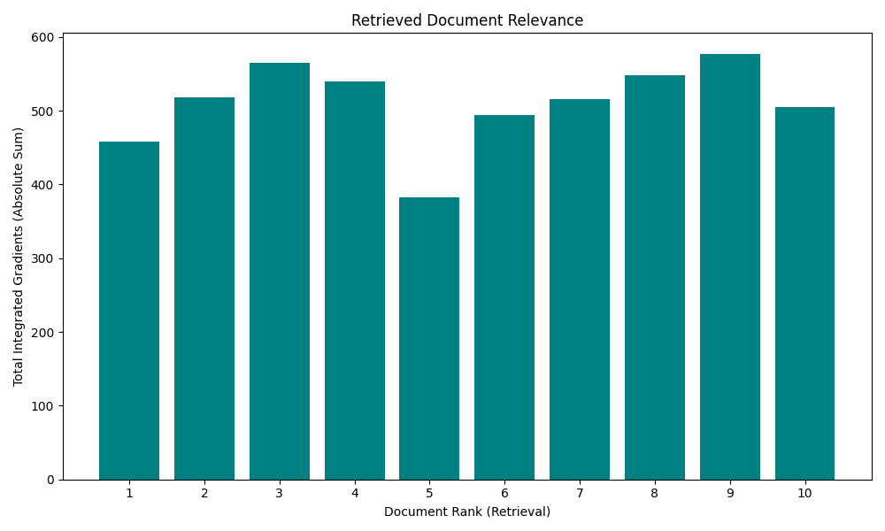
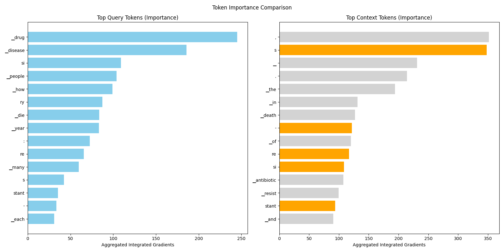

Analysis: query_20
Query: ▁que ry : ▁How ▁many ▁people ▁die ▁each ▁year ▁from ▁drug - re si stant ▁disease s ?
Document Relevance

Weighted Overlap

Token Comparison

Documents
Document 1 (Click to Expand)
▁Base d ▁on ▁our ▁simula tions , ▁these ▁infection s ▁with ▁antibiotic - re si stant ▁bacteria ▁result ed ▁in ▁an ▁annual ▁number ▁of ▁attribut able ▁death s ▁from ▁30 ▁7 30 ▁( 95% ▁UI ▁26 ▁9 35 – 34 ▁8 36) ▁in ▁2016 ▁to ▁38 ▁7 10 ▁( 95% ▁UI ▁34 ▁05 3 – 43 ▁7 48) ▁in ▁2019 , ▁with ▁a ▁small ▁decrease ▁to ▁35 ▁8 13 ▁death s ▁( 95% ▁UI ▁31 ▁ 395 – 40 ▁58 4) ▁in ▁2020. ▁When ▁analyse d ▁as ▁DA LY s , ▁the ▁infection s ▁led ▁to ▁an ▁annual ▁health ▁burde n ▁rang ing ▁from ▁9 09 ▁ 488 ▁( 95% ▁UI ▁8 13 ▁ 858 –1 ▁01 3 ▁0 60) ▁in ▁2016 ▁to ▁1 ▁101 ▁ 288 ▁( 95% ▁UI ▁ 988 ▁70 3 –1 ▁222 ▁4 98) ▁in ▁2019 , ▁with ▁a ▁small ▁decrease ▁to ▁1 ▁0 14 ▁ 799 ▁DA LY s ▁( 95% ▁UI ▁90 8 ▁02 2 –1 ▁129 ▁999 ) ▁in ▁2020. ▁Each ▁year , ▁84 - 85% ▁of ▁these ▁DA LY s ▁were ▁caused ▁by ▁years ▁of ▁life ▁lost ▁( Y LL s ) ▁and ▁67 -6 8% ▁were ▁due ▁to ▁B SI s . ▁We ▁estima ted ▁that ▁70 . 9% ▁of ▁cases ▁of ▁infection s ▁with ▁antibiotic - re si stant ▁bacteria ▁( 95% ▁CI ▁6 8.2 – 74 . 0% ) ▁were ▁health care - as soci ated ▁infection s , ▁with ▁71 . 4% ▁attribut able ▁death s ▁( 95% ▁CI ▁69 . 0 – 74 . 4% ) ▁and ▁73 . 0% ▁DA LY s ▁( 95% ▁CI ▁70 . ▁– 75 . 8%) , ▁respective ly , ▁being ▁link ed ▁to ▁health care - as soci ated ▁infection s . ▁4 ▁ TECH NICA L ▁REPORT ▁A sse ssing ▁the ▁Health ▁burde n ▁of ▁infection s ▁with ▁antibiotic - re si stant ▁bacteria ▁in ▁the ▁EU / EE A , ▁2016 -2020 ▁Table ▁2. ▁Total ▁number ▁of ▁blood ▁isola tes ▁of ▁the ▁selected ▁antibiotic - re si stant ▁bacteria ▁as ▁reported ▁to ▁E ARS - Net , ▁and ▁estima ted ▁number ▁of ▁blood stream ▁infection s , ▁number ▁of ▁infection s , ▁number ▁of ▁attribut able ▁death s ▁and ▁number ▁of ▁dis ability - ad just ed ▁life ▁years ▁( DAL Y s ), ▁EU / EE A , ▁2016 -2020
Document 2 (Click to Expand)
▁# ▁Anti bio tic ▁resist ance ▁is ▁an ▁increasing ▁problem . ▁Learn ▁all ▁about ▁it ▁in ▁the ▁Drug ▁Res i stance ▁channel . ▁Sta phy loc oc cus ▁aur eus ▁ , ▁Clo stri dio ides ▁difficile ▁ , ▁Candi da ▁a uris ▁ , ▁Drug - re si stant ▁Shi gel la ▁ . ▁These ▁bacteria ▁not ▁only ▁have ▁difficult ▁names ▁to ▁pro n ounce , ▁but ▁they ▁are ▁also ▁difficult ▁to ▁fight ▁off . ▁These ▁bacteria ▁may ▁infect ▁humans ▁and ▁animals , ▁and ▁the ▁infection s ▁they ▁cause ▁are ▁har der ▁to ▁treat ▁than ▁those ▁caused ▁by ▁non - re si stant ▁bacteria . ▁Anti micro bi al ▁resist ance ▁is ▁an ▁urgent ▁global ▁public ▁health ▁threat . ▁According ▁to ▁the ▁World ▁Health ▁Organization , ▁antibiotic ▁resist ance ▁lead s ▁to ▁higher ▁medical ▁costs , ▁prolong ed ▁hospital ▁stay s , ▁and ▁increased ▁mortal ity . ▁It ▁kill s ▁at ▁least ▁1. 27 ▁million ▁people ▁worldwide ▁and ▁they ▁are ▁associated ▁with ▁nearly ▁5 ▁million ▁death s ▁in ▁2019 , ▁according ▁to ▁the ▁CD C . ▁In ▁the ▁U . S . , ▁more ▁than ▁ 2.8 ▁million ▁anti micro bi al - re si stant ▁infection s ▁occur ▁each ▁year . ▁Care ful ▁pre scribi ng ▁of ▁antibiotic s ▁will ▁min imize ▁the ▁development ▁of ▁more ▁antibiotic - re si stant ▁strain s ▁of ▁bacteria . ▁Stay ing ▁informe d ▁is ▁another ▁way ▁to ▁fight ▁these ▁dangerous ▁" super bug s ." ▁Be low ▁are ▁some ▁of ▁the ▁latest ▁news ▁updates ▁on ▁the ▁topic ▁of ▁Drug ▁Res i stance . ▁S cient ists ▁make ▁critical ▁progress ▁toward ▁prevent ing ▁C . ▁diff ▁infection s ▁( e mbar goed ▁until ▁26- Mar -20 23 ▁5 :00 ▁PM ▁E DT ) ▁Res i stant ▁bacteria ▁are ▁a ▁global ▁problem . ▁Now ▁research ers ▁may ▁have ▁found ▁the ▁solution ▁Potential ▁Treatment ▁Target ▁for ▁Drug - Re si stant ▁Epi le psy ▁Identifi ed ▁Brazil ian ▁research ers ▁investiga te ▁diversi ty ▁of ▁E . ▁ coli ▁bacteria ▁in ▁hospital ized ▁patients ▁A ▁Quick ▁New ▁Way ▁to ▁Screen ▁Virus ▁Protein s ▁for ▁Anti bio tic ▁Properties ▁New ▁Class ▁of ▁Drug s ▁Could ▁Pre vent ▁Res i stant ▁CO VID -19 ▁Vari ants ▁The ▁world ' s ▁first ▁m RNA ▁vaccin e ▁for ▁dead ly ▁bacteria ▁From ▁anti - anti bio tics ▁to ▁ex tin ction ▁ therapy : ▁how ▁e volution ary ▁thinking ▁can ▁transform ▁medicine ▁St . ▁Jude ▁approach ▁prevent s ▁drug ▁resist ance ▁and ▁ toxic ity ▁Re strict ing ▁antibiotic s ▁for ▁live stock ▁could ▁limit ▁spread ▁of ▁antibiotic - re si stant ▁infection s ▁in ▁people ▁Res i stance ▁Is ▁Fu tile ▁Bac teria ▁ communica te ▁like ▁us ▁– ▁and ▁we ▁could ▁use ▁this ▁to ▁help ▁address ▁antibiotic ▁resist ance ▁Study ▁reveal s ▁how ▁drug ▁resist ant ▁bacteria ▁secret e ▁toxin s , ▁suggest ing ▁target s ▁to ▁reduce ▁vir ul ence
Document 3 (Click to Expand)
▁# ▁A ▁health ▁burde n ▁comparable ▁to ▁influenza , ▁HIV / AIDS ▁and ▁tubercul osis ▁combine d ? ▁Anti bio tic ▁resist ance ▁is ▁the ▁challenge ▁of ▁the ▁21 st ▁century ▁Photo : ▁Shu tter stock ▁SZ Ú ▁press ▁release ▁– ▁Every ▁year ▁in ▁Europe , ▁more ▁than ▁3 5,000 ▁people ▁die ▁as ▁a ▁result ▁of ▁antibiotic ▁resist ance . ▁If ▁the ▁negative ▁trend ▁continues ▁at ▁the ▁same ▁pace , ▁it ▁will ▁account ▁for ▁10 ▁million ▁victim s ▁worldwide ▁in ▁2050 . ▁Inf ection s ▁caused ▁by ▁resist ant ▁bacteria ▁cost ▁EU ▁health ▁systems ▁€ 1.1 ▁billion ▁annual ly . ▁Never the less , ▁there ▁is ▁a ▁chance ▁to ▁improve ▁the ▁un favor able ▁statistic s . ▁The ▁solution ▁is ▁to ▁approach ▁the ▁issue ▁in ▁the ▁spirit ▁of ▁" One ▁Health " ▁- ▁" one ▁health " ▁- ▁and ▁also ▁to ▁educa te ▁our ▁doctor s ▁and ▁the ▁public , ▁which ▁is ▁what ▁the ▁SZ Ú ▁Anti bio tic ▁Res i stance ▁Project ▁is ▁trying ▁to ▁do ▁in ▁the ▁Czech ▁Republic . ▁And ▁positive ▁results ▁are ▁coming . ▁In ▁2019 , ▁there ▁were ▁1. 27 ▁million ▁death s ▁caused ▁by ▁antibiotic - re si stant ▁bacteria ▁worldwide . ▁There ▁are ▁3 5,000 ▁victim s ▁in ▁Europe . ▁Just ▁6 ▁main ▁path ogen s ▁– ▁E . ▁ coli , ▁S . ▁aur eus , ▁K . ▁pneu monia e , ▁S . ▁pneu monia e , ▁A . ▁bau manni i ▁and ▁P . ▁a eru gin osa ▁– ▁were ▁responsible ▁for ▁more ▁than ▁7 3% ▁of ▁them . ▁In ▁the ▁Czech ▁Republic , ▁these ▁bacteria ▁are ▁responsible ▁for ▁the ▁lives ▁of ▁approximately ▁500 ▁people ▁every ▁year . ▁What ▁is ▁extremely ▁worry ing , ▁however , ▁is ▁the ▁fact ▁that ▁in ▁our ▁country , ▁antibiotic ▁resist ance ▁has ▁more ▁victim s ▁than ▁car ▁accident s . ▁" The ▁campaign ▁against ▁antibiotic ▁resist ance , ▁which ▁we ▁implement ed ▁for ▁two ▁years , ▁was ▁necessary ▁in ▁view ▁of ▁these ▁data , ▁and ▁the ▁data ▁prove s ▁to ▁us ▁that ▁the ▁Czech ▁public ' s ▁awareness ▁of ▁the ▁issue ▁has ▁improve d ▁significantly . ▁We ▁must ▁continue ▁to ▁fight ▁systematic ally ▁in ▁coopera tion ▁with ▁the ▁public ▁and ▁experts ▁against ▁antibiotic s ▁los ing ▁their ▁strength . ▁On ▁the ▁front ▁line ▁with ▁the ▁patient ▁are ▁general ▁prac ti tioner s , ▁who ▁can ▁face ▁pressure ▁from ▁un inform ed ▁patients ▁to ▁pre scribe ▁antibiotic s ▁even ▁when ▁people ▁come ▁in ▁with ▁illness es ▁that ▁antibiotic s ▁don ' t ▁work ▁on . ▁It ▁is ▁good ▁for ▁doctor s ▁to ▁patient ly ▁explain ▁two ▁things : ▁why ▁they ▁do ▁not ▁pre scribe ▁antibiotic s , ▁or ▁how ▁important ▁it ▁is ▁that ▁their ▁use ▁be ▁strict ly ▁followed . ▁In ▁the ▁same ▁way , ▁patients ▁learn ▁about ▁care ful ▁use ▁in ▁pharmacie s , ▁and ▁I ▁believe ▁that ▁thanks ▁to ▁our ▁campaign , ▁patients ▁will ▁now ▁come ▁more ▁informe d , ▁knowing ▁that ▁antibiotic s ▁have ▁their ▁irre place able ▁role , ▁but ▁they ▁do ▁not ▁benefit ▁anyone ▁if ▁they ▁are ▁used ▁un ne cess ari ly ▁or ▁incorrect ly , " ▁remind s ▁the ▁Director ▁of ▁the ▁State ▁Health ▁Service ▁institut e ▁MU Dr . ▁Bar bora ▁Mac ková , ▁M HA . ▁Why ▁did ▁antibiotic s ▁begin ▁to ▁los e ▁their ▁hea ling ▁effects ? ▁Natural ly , ▁because ▁the ▁bacteria ▁started ▁to ▁get ▁used ▁to ▁them .
Document 4 (Click to Expand)
▁## ▁1.5 ▁Trend s ▁in ▁anti micro bi al ▁resist ance ▁## ▁1. 5.1 ▁Global ▁trend s ▁WHO ▁reports ▁that , ▁about ▁440 ▁000 ▁new ▁cases ▁of ▁multi drug - re si stant ▁tubercul osis ▁( M DR - TB ) ▁emerge ▁annual ly , ▁causing ▁at ▁least ▁150 ▁000 ▁death s . ▁Ex tensi ve ly ▁drug - re si stant ▁tubercul osis ▁( X DR - TB ) ▁has ▁been ▁reported ▁in ▁64 ▁countries ▁( WHO , ▁2014) . ▁It ▁is ▁also ▁reported ▁that , ▁a ▁high ▁percentage ▁of ▁hospital - ac qui red ▁infection s ▁are ▁caused ▁by ▁highly ▁resist ant ▁bacteria ▁such ▁as ▁met hi ci llin - re si stant ▁Sta phy loc oc cus ▁aur eus ▁( M RSA ). ▁A MR ▁has ▁become ▁a ▁serious ▁problem ▁for ▁treatment ▁of ▁go nor r hea ▁( ca used ▁by ▁Ne isse ria ▁go nor r ho e a e ), ▁in vol ving ▁“ last - line ” ▁oral ▁cep halo spor ins . ▁This ▁ phen ome non ▁is ▁increasing ▁in ▁prevale nce ▁worldwide . ▁Un t rea table ▁go noc oc cal ▁infection s ▁would ▁result ▁in ▁increased ▁rates ▁of ▁illness ▁and ▁death , ▁thu s ▁rever sing ▁the ▁gain s ▁made ▁in ▁the ▁control ▁of ▁this ▁sexual ly ▁transmit ted ▁infection ▁( WHO , ▁2014) . ▁A MR ▁is ▁also ▁an ▁emer ging ▁concern ▁for ▁treatment ▁of ▁HIV ▁infection , ▁after ▁the ▁rapid ▁exp an sion ▁in ▁access ▁to ▁anti ret rovi ral ▁drugs ▁in ▁recent ▁years . ▁## ▁page ▁4 ▁Policy ▁on ▁Anti micro bi al ▁Use ▁and ▁Res i stance ▁for ▁Ghana , ▁1 st ▁Edition ▁2017 ▁At ▁the ▁end ▁of ▁2011, ▁more ▁than ▁8 ▁million ▁people ▁were ▁receiving ▁anti ret rovi ral ▁ therapy ▁in ▁low - ▁and ▁middle - in come ▁countries ▁to ▁treat ▁HIV . ▁Although ▁analysis ▁of ▁data ▁from ▁WHO ▁survey s ▁that ▁target ▁people ▁who ▁have ▁been ▁recently ▁infect ed ▁with ▁HIV ▁indicate s ▁increasing ▁levels ▁of ▁resist ance ▁to ▁the ▁non - nu cle o side ▁rever se ▁tran script ase ▁( NN RTI ) ▁class ▁of ▁drug ▁used ▁to ▁treat ▁HIV . This ▁increase ▁is ▁particularly ▁notice able ▁in ▁Af - ▁rica , ▁where ▁the ▁prevale nce ▁of ▁resist ance ▁to ▁ NN RTI ▁reached ▁3. 4% ▁( 95% ▁CI , ▁1.8 -5 . 2%) ▁in ▁2009 ▁( WHO , ▁2014) . ▁Over ▁the ▁past ▁10 ▁years , ▁anti vir al ▁drugs ▁have ▁become ▁important ▁tools ▁for ▁treatment ▁of ▁epidemi c ▁and ▁pande mic ▁influenza . ▁It ▁was ▁estima ted ▁that , ▁by ▁2012, ▁virtual ly ▁all ▁influenza ▁A ▁virus es ▁circula ting ▁in ▁humans ▁would ▁be ▁resist ant ▁to ▁drugs ▁frequently ▁used ▁for ▁the ▁pre vention ▁of ▁influenza ▁( am anta dine ▁and ▁rim anta dine ). ▁Anti vir al ▁sus cept i bility ▁is ▁constantly ▁monitor ed ▁through ▁the ▁WHO ▁Global ▁Sur ve illa nce ▁and ▁Response ▁System . ▁There ▁is ▁evidence ▁to ▁show ▁that ▁aqua culture ▁has ▁been ▁contribu ting ▁to ▁the ▁global ▁development ▁and ▁spread ▁of ▁A MR .
Document 5 (Click to Expand)
▁More ▁than ▁96 ▁percent ▁of ▁those ▁drugs ▁are ▁routine ly ▁distribu ted ▁in ▁feed ▁or ▁water — o ften ▁to ▁animals ▁that ▁are ▁not ▁sick ▁to ▁speed ▁up ▁growth ▁and ▁help ▁animals ▁survive ▁crowd ed ▁and ▁un san ita ry ▁conditions ▁on ▁industrial ▁farm s . ▁This ▁practice ▁contribute s ▁to ▁the ▁growing ▁epidemi c ▁of ▁drug - re si stant ▁infection s ▁in ▁humans . ▁Lead ing ▁medical ▁experts ▁war n ▁that ▁we ▁must ▁stop ▁over use ▁of ▁antibiotic s ▁in ▁human ▁medicine ▁and ▁animal ▁ agriculture , ▁or ▁else ▁the ▁life - sa ving ▁drugs ▁we ▁re ly ▁on ▁to ▁treat ▁common ▁infection s ▁and ▁en able ▁medical ▁procedure s ▁could ▁stop ▁working . ▁Conserva tive ly , ▁at ▁least ▁2 ▁million ▁American s ▁are ▁infect ed ▁with ▁antibiotic - re si stant ▁infection s ▁every ▁year , ▁and ▁at ▁least ▁2 3,000 ▁die ▁as ▁a ▁direct ▁result , ▁according ▁to ▁the ▁Center s ▁for ▁Disease ▁Control ▁and ▁Pre vention . ▁E ar lier ▁this ▁year , ▁scientist s ▁discovered ▁a ▁gene ▁which ▁allows ▁bacteria ▁to ▁resist ▁col istin - - an ▁antibiotic ▁used ▁as ▁a ▁last - resor t ▁when ▁all ▁other ▁antibiotic s ▁fail - - in ▁the ▁U . S . ▁for ▁the ▁first ▁time , ▁rais ing ▁the ▁spec tre ▁of ▁a ▁kind ▁of ▁“ super - super bug , ” ▁resist ant ▁to ▁every ▁life - sa ving ▁antibiotic ▁available . ▁Add i tional ▁Resource s ▁Center ▁for ▁Food ▁Safety ▁Fact ▁She et : ▁" P har ming ▁Profit s : ▁The ▁Drug s ▁that ▁Make ▁Che ap ▁Me at " ▁ ###